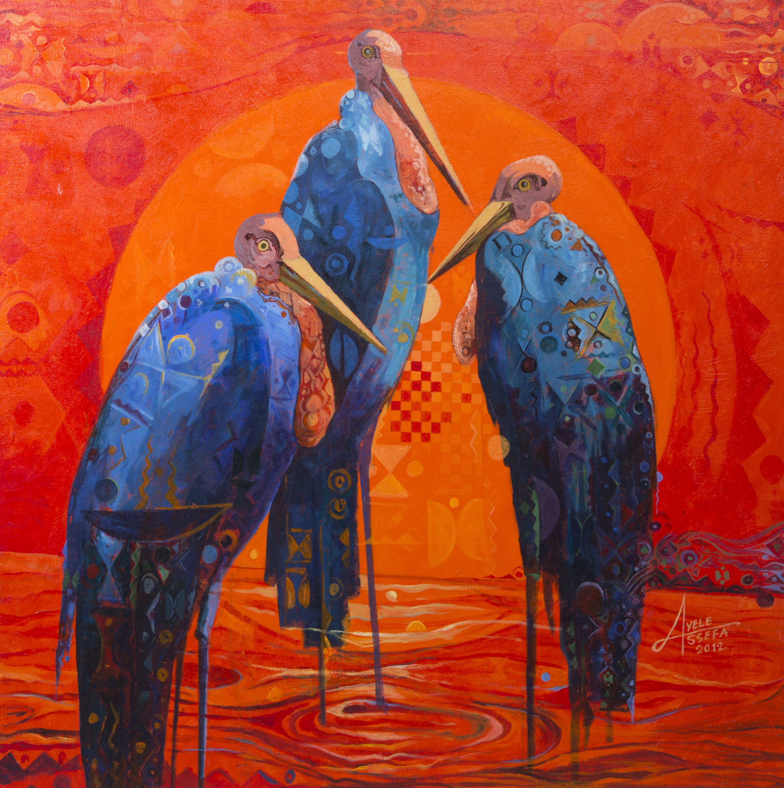

Thinking Girl
One of the most significant works produced during the Northern Renaissance, this composition is believed to be one of the first paintings executed in oils. A full-length double portrait, it reputedly portrays an Italian merchant and a woman who may or may not be his bride. In 1934, the celebrated art historian Erwin Panofsky proposed that the painting is actually a wedding contract

Nature
Birds are a group of warm-blooded vertebrates constituting the class Aves , characterised by feathers, toothless beaked jaws, the laying of hard-shelled eggs, a high metabolic rate, a four-chambered heart, and a strong yet lightweight skeleton.
Putin
Vladimir Vladimirovich Putin (born 7 October 1952) is a Russian politician and former intelligence officer, serving as the current president of Russia. Putin has served continuously as president or prime minister since 1999: as prime minister from 1999 to 2000 and from 2008 to 2012
street
sing OpenStreetMap India map data. OpenStreetMap data is available for free download and use per Open Data Commons Open Database License (ODbL). Various data download and export formats based on user
Street Art 2
Street art refers to visual art created in public spaces, typically in urban environments such as streets, walls, and buildings. It encompasses various artistic forms, including graffiti, murals, stencils, posters, installations, and more. Street art often carries social, political, or cultural messages and serves as a form of artistic expression and communication.
monalisa
The Mona Lisa is a half-length portrait painting by Italian artist Leonardo da Vinci. Considered an archetypal masterpiece of the Italian Renaissance, it has been described as "the best known, the most visited, the most written about, the most sung about, [and] the most parodied work of art in the world".
Leo
Saint Jerome took to extremes. As theologian and scholar, he traveled to the Holy Land to master Hebrew, translated the Hebrew Bible into Latin, churned out commentary after commentary, and defended church doctrine with warnings of hell. And then there was the sinner, shamed by his conduct among women, converted to Christianity after a vision, and living alone in the desert but for a lion and for a stone to beat his breast.
Mona
Street art has gained recognition as a legitimate form of artistic expression and has become an integral part of urban culture in many cities around the world. It often challenges traditional notions of art by breaking free from the confines of galleries and museums, making art accessible to a broader audience.